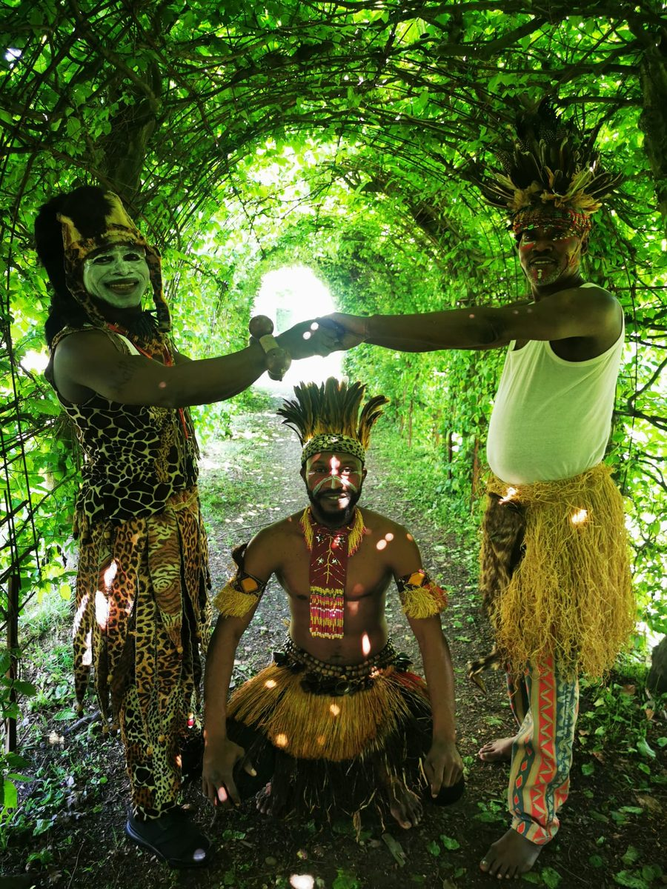

Comment se déroule la soirée
Shoonya Dance Centre · Stapelplein 41, 9000 Gent19:00
Spectacle
Shoonya Theatre · payant · €20
Soixante-dix minutes de danse congolaise, chant, tam-tams, lokole et balafon au Shoonya Theatre, dans le bâtiment de Shoonya lui-même.
20:10
Transition
Le spectacle se termine et la soirée passe du théâtre à la participation.
20:30
Initiations gratuitesSans inscription
Studio Ananta · rez-de-chaussée
Aucun ticket ni inscription nécessaire. Trois courtes initiations : danse traditionnelle congolaise avec Bawayi, Ndombolo moderne avec Joseph, et danse du Burkina Faso avec Awa.
21:15–21:30
Clôture
Les initiations se terminent et les portes ferment à 21:30.
Sur la piste
Le type de rythme dans lequel vous entrez à 20:30.
Une courte boucle de Groupe Furaya : des pas simples, une énergie de réponse collective, et la salle qui bouge ensemble. La vidéo joue ici sans son ; activez le son si vous voulez entendre le rythme live. Arrivez simplement à 20:30 ; aucune inscription n’est nécessaire.
Groupe Furaya
Danse congolaise, chant et rythme live — assez proche pour y entrer.
Groupe Furaya réunit danse, chant, percussions et balafon dans un style qui circule entre formes traditionnelles et contemporaines. Le spectacle s’appuie sur des rythmes et chants traditionnels de la République démocratique du Congo, portés par des instruments live comme les tam-tams, le lokole, les maracas et le balafon.
Il y a aussi un lien direct avec Shoonya : Joseph Saidi Simako — qui enseigne l’African Dance, la danse congolaise et la rumba congolaise au Shoonya Dance Centre — fait partie de Groupe Furaya et mène l’initiation au Ndombolo moderne.
Quelques élèves du Shoonya Dance Centre participeront aussi au spectacle.

Tickets
Réservez le spectacle. Rejoignez librement les initiations.
Le ticket de €20 concerne le spectacle de 19:00. Les initiations de 20:30 sont gratuites et ouvertes à tout le monde, y compris aux personnes qui n’ont pas assisté au spectacle. Aucune inscription n’est nécessaire pour les initiations.
Les deux salles se trouvent dans le même bâtiment de Shoonya. Studio Ananta est au rez-de-chaussée du Shoonya Dance Centre.
FAQ
Questions pratiques
Puis-je venir uniquement pour les initiations gratuites ?
Oui. Les portes rouvrent à 20:30 et les initiations sont gratuites. Vous n’avez pas besoin d’un ticket pour le spectacle ni d’une inscription séparée.
Le spectacle et les initiations sont-ils au même endroit ?
Ils sont dans le même bâtiment de Shoonya, au Stapelplein 41. Le spectacle a lieu au Shoonya Theatre ; les initiations ont lieu au Studio Ananta, au rez-de-chaussée.
Faut-il avoir de l’expérience en danse ?
Non. Chaque initiation dure 15 minutes et commence depuis zéro.
Quelles langues seront utilisées ?
Joseph enseignera dans un format multilingue, Bawayi en français, et Awa en anglais et en français.
Que faut-il porter ?
Portez des vêtements confortables dans lesquels vous pouvez bouger. Vous pouvez danser pieds nus ou avec des chaussures de danse propres pour l’intérieur.